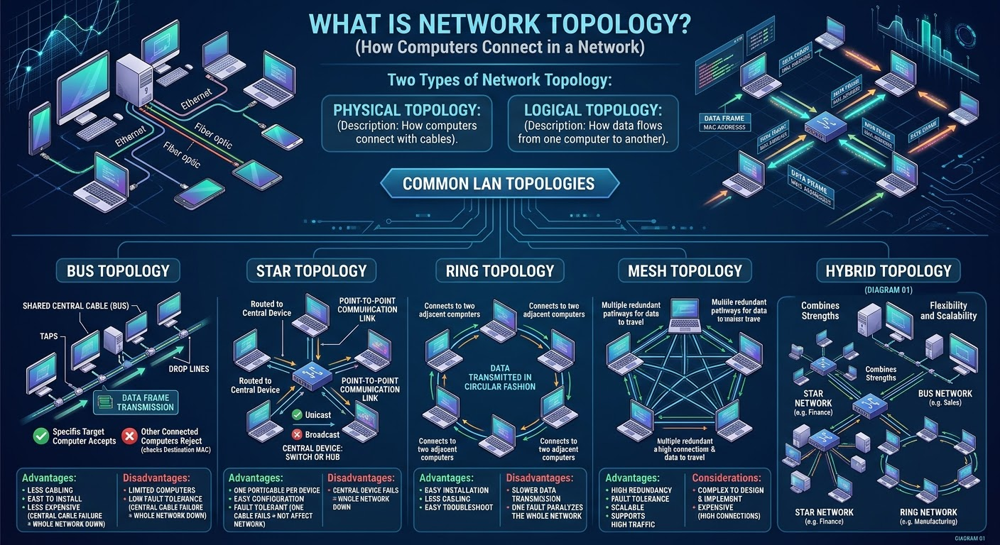

what is Network Topology?
Network topology is how computers connect to one another in a computer network.There are two types of Network topology: Physical topology and Logical topology.
Physical Topology.
It describes the way computers connect with the help of cables.
Logical Topology.
It describes the way data flows from one computer to another within a computer network.
The most commonly used computer network to interconnect physically distributed computers is LAN.
There are different topologies this network has: Star Topology, Bus Topology, Ring Topology, Mesh Topology, and Hybrid Topology.
Bus Topology.
Computers connect to shared central cable, called bus with taps and drop lines. shared means all connected computers use the same cable for data frame transmission
Taps are the connectors and drop lines are the cables running in between the computers and the bus.
In the bus topology, if one computer sends a message to another computer the other connected computers will also receive the frame. but only the specific or targeted computer accepts the message and others reject by checking the destination MAC address in the received frame.
Bus topology requires less cabling so that it is easy to install and less expensive to implement.
as we discussed before, all computers are connected to the central cable, that means if the central cable fails, the whole network is down. so you can say Bus topology Advantage is less cabling and its disadvantage is limited computers can share the network without problem and also less fault tolerance is its disadvantage.
Star Topology.
Computer connect to the central device called, switch or Hub with point to point communication links.
In this topology, if one computer wants to send a data frame to another computer, it is first routed to the central device. then the central device is either Broadcast or Unicast, towards the destination computer based on the type of central device used.
to understand the central device( what Unicast or broadcast means) open the computer network devices module.
The Advantage of star topology is: only one input/output port and one cable is needed for each device to connect to several devices (less expensive than mesh topology), also it is easy to configure, if one cable connected to the central device fails it will not affect the other network (fault tolerance).
The disadvantage of star is, if the central device fails, all network will down.
Ring Topology.
In this topology, each computers connect to two adjecent computers to form a ring. Data transmitted by one computer moves from one computer to another in circular fashion to reach its final destination.
The Advantage of ring topology are easy installation, less cabling, and easy to troubleshoot.
The disadvantage is, it makes data transmission slower, since all computers connect to form a closed loop, one fault paralyzes the whole network.
Mesh Topology.
Unlike star or ring topologies that rely on a central hub or a single sequential loop, mesh network creates multiple redundant pathways for data to travel.
Advantages: High redundancy and fault tolerance and Scalable and supports a high volume of traffic.
Considerations: Complex to design and implement and Expensive due to the high number of connections.
Hybrid Topology.
Hybrid topology is a setup that combines two or more different basic network layouts. Such as star, ring or bus topologies into a single integrated system.
Advantages: Combines the strengths of different topologies and Offers flexibility and scalability.
Considerations: Can be more complex to manage and Cost implications based on the combination chosen.
See Figure 01

Figure-01